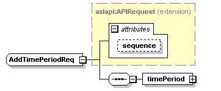
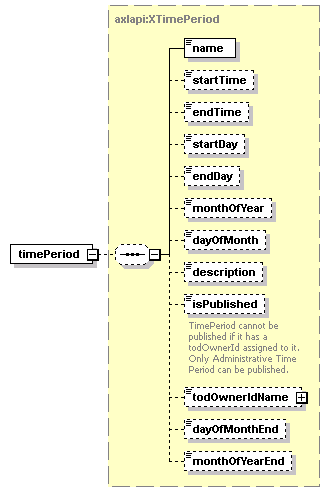

| diagram |  | ||||||||||||
| namespace | http://www.cisco.com/AXL/API/10.5 | ||||||||||||
| type | extension of axlapi:APIRequest | ||||||||||||
| properties |
|
||||||||||||
| children | timePeriod | ||||||||||||
| used by |
|
||||||||||||
| attributes |
|
||||||||||||
| source | <xsd:complexType name="AddTimePeriodReq"> <xsd:complexContent> <xsd:extension base="axlapi:APIRequest"> <xsd:sequence> <xsd:element name="timePeriod" type="axlapi:XTimePeriod"/> </xsd:sequence> </xsd:extension> </xsd:complexContent> </xsd:complexType> |
| diagram |  | ||
| type | axlapi:XTimePeriod | ||
| properties |
|
||
| children | name startTime endTime startDay endDay monthOfYear dayOfMonth description isPublished todOwnerIdName dayOfMonthEnd monthOfYearEnd | ||
| source | <xsd:element name="timePeriod" type="axlapi:XTimePeriod"/> |